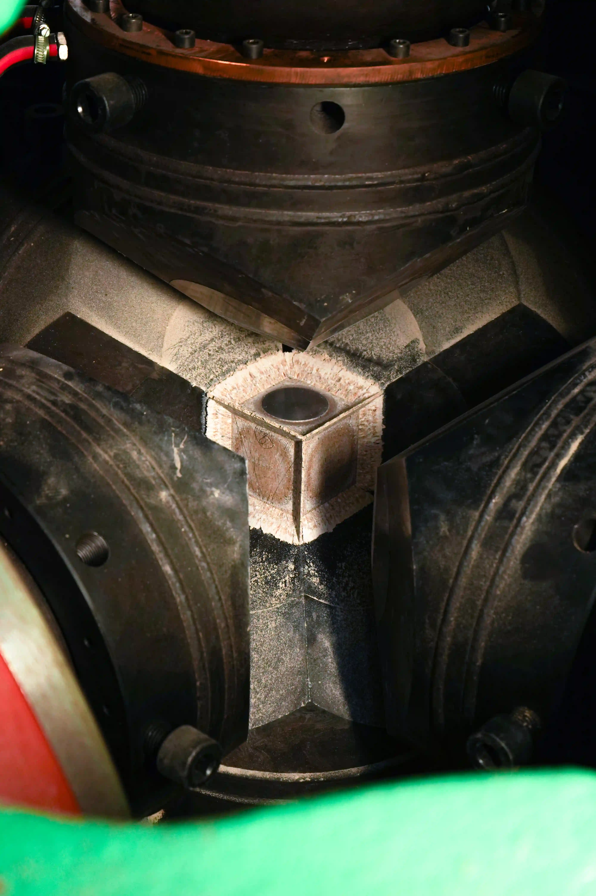
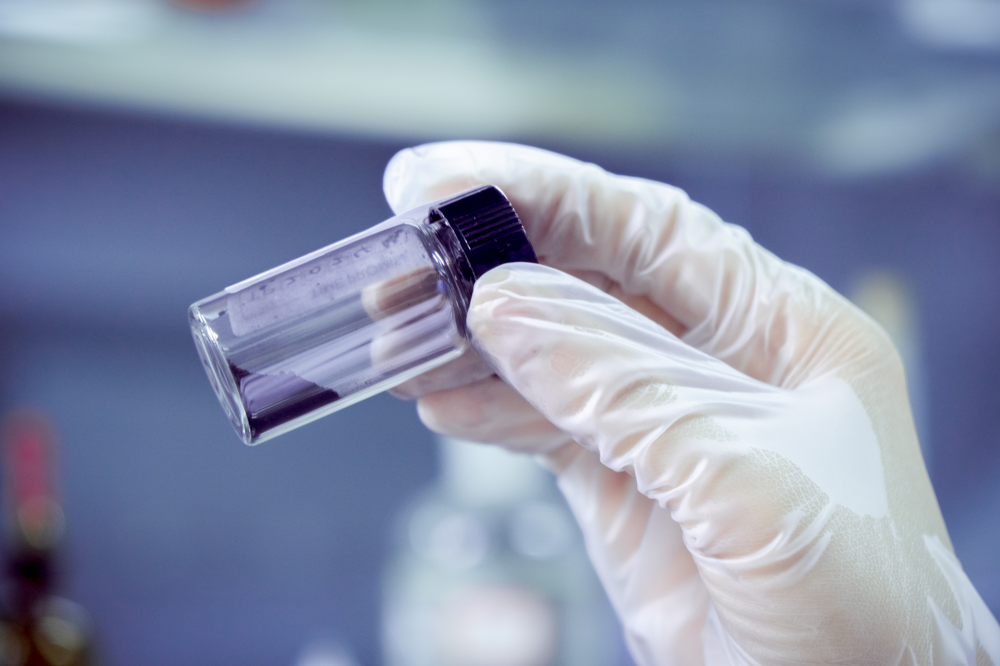

Lab-grown diamond manufacturing has evolved from laboratory curiosity to industrial-scale production. For memorial diamond businesses, veterinary services, and pet cremation providers evaluating white-label supply partners, understanding the actual manufacturing process is essential. This article provides a step-by-step technical overview of industrial lab-grown diamond production — from raw carbon intake through certified gem output — written for B2B decision-makers who need to evaluate manufacturing capabilities and quality systems.
TL;DR — Quick Summary
Lab-grown diamond manufacturing is an industrial pipeline: carbon feedstock purification, graphitization, HPHT synthesis at 5–6 GPa and 1,300–1,600°C, crystal extraction, cutting and polishing, and independent gemological certification. For memorial diamonds, batch traceability and sample-specific handling are additional requirements that make the process more labor-intensive than standard synthetic diamond production.
The manufacturing pipeline divides into six stages: carbon preparation, graphitization, HPHT synthesis, crystal growth monitoring, cutting and polishing, and quality validation. Each stage introduces variables that determine the final diamond's optical properties, structural integrity, and commercial value. BioGem Lab's technology infrastructure is optimized for memorial diamond production, where each carbon source is unique and process consistency is non-negotiable.

Stage 1: Carbon Source Preparation and Purification
All lab-grown diamonds begin with a carbon source. In standard industrial production, this is synthetic graphite produced from petroleum coke or other high-purity carbon precursors. In memorial diamond manufacturing, the carbon source is biological — hair, fur, or botanical material — and must undergo extensive purification before it can enter the synthesis stage.
Biological Carbon Extraction
Biological material contains carbon in various chemical forms: keratin proteins in hair, collagen in nails, organic compounds in biological samples. The first step is thermal decomposition at 400-800°C in a controlled atmosphere, which removes water, volatile organics, and non-carbon elements. What remains is a carbon-rich residue mixed with inorganic contaminants — primarily calcium and phosphorus from bone material, sulfur from protein structures, and trace metal ions.
Chemical purification follows. Acid washing with hydrochloric and nitric acid removes inorganic salts and metal oxides. The carbon residue is then rinsed to neutral pH and dried. The resulting purified carbon is typically 95-98% carbon by mass, with the remainder being tightly bound structural elements that require higher-temperature treatment to remove.
Our article on bio-carbon memorial diamond science provides additional detail on the chemistry of biological carbon extraction and its impact on final diamond quality.
Industrial Graphite Feedstock Preparation
For standard synthetic diamonds or as a supplement when biological carbon yield is insufficient, laboratories use high-purity synthetic graphite. This material arrives at 99.95%+ carbon purity and requires only minimal preprocessing — crushing to uniform particle size and blending with catalyst metal powders before loading into the growth cell.
Stage 2: Graphitization — The Hidden Quality Gate
Graphitization is the conversion of amorphous or disordered carbon into crystalline graphite with a well-ordered hexagonal layered structure. This step is critical because HPHT diamond synthesis requires the carbon source to be in graphite form; amorphous carbon dissolves poorly in molten metal catalysts and produces inconsistent growth rates.
High-Temperature Graphitization
Purified bio-carbon or synthetic graphite is placed in a graphitization furnace and heated to 2,000-2,800°C under argon or vacuum atmosphere. At these temperatures, carbon atoms rearrange from disordered structures into the ABAB stacking sequence of graphite crystals. The process typically requires 12-24 hours for complete conversion.
The quality of graphitization directly impacts diamond growth. Poorly graphitized carbon contains residual amorphous regions that dissolve at different rates in the molten catalyst, producing carbon concentration fluctuations and growth instabilities. Well-graphitized carbon, by contrast, provides a uniform dissolution front and steady carbon transport to the growing diamond seed.
Graphitization Parameters
- Temperature range2,000 – 2,800°C
- AtmosphereArgon / Vacuum
- Duration12 – 24 hours
- Target structureHexagonal graphite (ABAB)
- Purity post-process≥99.95% carbon
Stage 3: HPHT Synthesis — Crystal Growth
High Pressure High Temperature (HPHT) synthesis is the core of lab-grown diamond manufacturing. It replicates the geological conditions of the Earth's mantle — approximately 5-6 GPa of pressure and 1,300-1,600°C temperature — within a controlled industrial press system. Our technical overview of HPHT diamond growth covers the physics in detail; here we focus on the manufacturing workflow.
Growth Cell Assembly
The growth cell is a carefully engineered assembly that fits inside the press anvils. It consists of: (1) a carbon source zone containing the purified graphite, (2) a metal catalyst layer (typically Ni-Mn-Co alloy), (3) a diamond seed crystal oriented on a specific crystallographic face, and (4) thermal and pressure containment structures made of pyrophyllite or ceramic composites.
The seed crystal is the foundation upon which the new diamond grows. Seeds are typically small synthetic diamonds, 1-3 mm in size, with polished (100) or (111) surfaces. The seed orientation determines the growth morphology of the resulting crystal. Memorial diamond laboratories maintain seed inventories matched to target size ranges and desired crystal shapes.
Press Loading and Sealing
The assembled growth cell is loaded into the HPHT press — either a belt press with two opposing anvils or a cubic press with six anvils. The press is sealed, and hydraulic systems begin applying pressure while heating elements raise temperature. The target conditions are reached over 2-4 hours to avoid thermal shock or pressure spikes that could fracture the cell assembly.
Carbon Transport and Crystallization
Once the growth chamber reaches 5-6 GPa and 1,300-1,600°C, the metal catalyst melts and becomes a solvent for carbon. The carbon source dissolves into the molten metal, and a temperature gradient — typically 20-50°C across the cell — drives carbon transport from the hot source zone toward the cooler seed zone. As the metal cools, its carbon solubility decreases, creating supersaturation that drives carbon precipitation onto the diamond seed.
This is not a simple deposition process. Carbon atoms must incorporate into the existing diamond lattice while maintaining the sp3 tetrahedral bonding structure. Growth occurs atom by atom, extending the seed crystal outward. Typical growth rates range from 0.1 to 0.5 mm per day depending on temperature gradient, catalyst composition, and target quality.

Stage 4: Growth Monitoring and Process Control
A 30-60 day growth cycle requires continuous monitoring because small deviations in pressure, temperature, or catalyst chemistry can produce visible defects or color shifts. Industrial laboratories use real-time sensor feedback and periodic inspection protocols to maintain process control.
In-Run Parameter Monitoring
Pressure transducers measure chamber pressure with ±0.1 GPa accuracy. Thermocouples embedded in the growth cell assembly track temperature distribution. Data logging systems record conditions at intervals ranging from seconds to minutes, creating a complete process history for each production run. If pressure or temperature drifts outside specification windows, the control system adjusts heating power or hydraulic pressure to restore equilibrium.
Interruption Recovery Protocols
Power outages, equipment maintenance, or pressure excursions occasionally interrupt growth cycles. Experienced laboratories have recovery protocols: brief interruptions (under 2 hours) often allow growth to resume without significant quality impact. Longer interruptions require cell inspection and potential restart with a fresh seed. The decision depends on interruption duration, cooling rate, and whether the growth front remained stable during the event.
Growth Duration by Target Size
- 0.3 ct (4.2 mm)20 – 25 days
- 0.5 ct (5.2 mm)30 – 35 days
- 1.0 ct (6.5 mm)45 – 60 days
- 1.5 ct (7.4 mm)70 – 90 days
Stage 5: Cutting and Polishing
The as-grown HPHT crystal is a rough, cubo-octahedral block with {100} and {111} growth faces. It bears no resemblance to the finished brilliant-cut gem. Transforming raw crystal into marketable diamond requires precision cutting, grinding, and polishing — a process that removes 40-60% of the original crystal mass.
Crystal Assessment and Planning
Before cutting, the rough crystal is examined under magnification to identify internal inclusions, growth sectors, and strain patterns. A cutting plan is developed to maximize yield while positioning any inclusions in locations that minimize visual impact. For memorial diamonds, the goal is typically a round brilliant cut because it maximizes light return and hides minor imperfections, but partners may request princess, cushion, or other shapes based on customer preference.
Bruting, Grinding, and Faceting
Bruting shapes the rough crystal into a round outline using two diamonds rotating against each other. Grinding establishes the basic facet geometry using diamond-impregnated wheels. Polishing — the final step — creates the mirror-like surface finish that enables light reflection and refraction. Each facet must be precisely angled: the table at 0°, crown facets at 34.5°, pavilion facets at 40.75° for optimal brilliance in a round brilliant cut.
Our manufacturing page details the cutting and polishing infrastructure available for partner production runs, including shape options and proportion tolerances.
Stage 6: Quality Validation and Certification
The final stage validates that the diamond meets specifications for size, color, clarity, and cut quality. Memorial diamond customers — and the partners who serve them — expect documented verification that the finished gem is genuine and matches the ordered specifications.
Spectroscopic Analysis
Fourier-transform infrared (FTIR) spectroscopy confirms diamond identity by detecting the characteristic carbon lattice absorption bands. It also quantifies nitrogen and boron content, which determine color grade. Raman spectroscopy verifies the sp3 bonding structure and can detect residual graphite or non-diamond carbon phases. UV-Vis spectroscopy identifies optical centers that affect color perception.
Microscopic Inspection
Gemological microscopes at 10x-60x magnification examine the diamond for inclusions, fractures, and growth features. Clarity grading follows standard scales: FL (flawless), VVS (very very slightly included), VS (very slightly included), SI (slightly included), and I (included). For memorial diamonds, VS or higher is the typical target, though SI grades are acceptable for smaller stones where inclusions are less visible.
Cut Proportion Verification
Automated scanning systems measure facet angles, table percentage, crown height, pavilion depth, and girdle thickness. These proportions determine how effectively the diamond returns light to the observer. Ideal or Excellent cut grades require proportions within tight tolerances: table 53-57%, crown angle 34-35°, pavilion angle 40.5-41°.
Certification and Documentation
BioGem Lab provides CCIC traceability certification with a unique national traceability code, confirming the diamond's origin and manufacturing chain. Gemological certificates document the 4Cs — carat weight, color, clarity, and cut — and may include a plot diagram showing inclusion locations. For B2B partners, these documents become part of the white-label package delivered to end customers.
Explore OEM Memorial Diamond Manufacturing
White-label HPHT synthesis infrastructure, validated process protocols, and dedicated production capacity for B2B partners worldwide.
Request OEM ConsultationFrequently Asked Questions
What are the main steps in lab-grown diamond manufacturing?
Industrial lab-grown diamond manufacturing follows six stages: (1) carbon source preparation and purification, (2) graphitization to convert amorphous carbon into crystalline graphite, (3) HPHT synthesis at 5-6 GPa and 1,300-1,600°C using metal catalyst transport, (4) crystal growth monitoring over 18-25 days, (5) cutting and polishing into finished gem proportions, and (6) quality validation through spectroscopy, microscopy, and certification.
How long does it take to grow a lab-grown diamond?
The HPHT synthesis stage alone requires 18-25 days depending on target size. A 0.3 carat diamond grows in 20-25 days, while a 1.0 carat stone requires 18-25 days at reduced growth rate to maintain clarity. The full manufacturing cycle from carbon intake to certified gem is approximately ~60 days.
What is the difference between lab-grown and natural diamonds?
Structurally, there is no difference. Both are crystalline carbon in the sp3 tetrahedral lattice arrangement. Lab-grown diamonds are produced in controlled industrial environments using HPHT or CVD synthesis, while natural diamonds form under geological conditions over millions of years. Gemological laboratories identify growth morphology and trace element signatures to distinguish origin, but physical, optical, and chemical properties are identical.
Can biological carbon be used in lab-grown diamond manufacturing?
Yes. Purified bio-carbon from hair, fur, nails, or botanical material is converted to graphite through controlled graphitization at 2,000-2,800°C, then used as feedstock in standard HPHT synthesis. The resulting diamond is structurally and chemically identical to natural or synthetic diamonds from industrial graphite sources.
What quality control measures are used in memorial diamond manufacturing?
Quality control spans the entire production pipeline: carbon purity verification through elemental analysis, graphitization completion confirmed by X-ray diffraction, in-run pressure and temperature monitoring via real-time transducers, post-growth crystal inspection for inclusions and strain patterns, spectroscopic analysis for nitrogen and boron content, cut proportion verification through automated scanning, and final certification by accredited gemological laboratories.
What equipment is required for industrial lab-grown diamond production?
Core equipment includes: HPHT belt or cubic presses generating 5-6 GPa, graphitization furnaces operating at 2,000-2,800°C under inert atmosphere, carbon purification systems with chemical extraction and filtration, precision diamond cutting and polishing wheels, spectroscopic analysis instruments (FTIR, Raman, UV-Vis), and microscopy systems for inclusion mapping and clarity grading.
Related Articles
Patent-backed carbon extraction technology. Patent No. ZL 201010565778.9